These are twelve live portfolios by individual photographers, screenshotted on 2026-10-29 at 1440×900. They are grouped by how closely they match our structure (home → gallery → single image). For each one, the caption says what is worth borrowing. Raw research notes are in candidates-a.md and candidates-b.md.
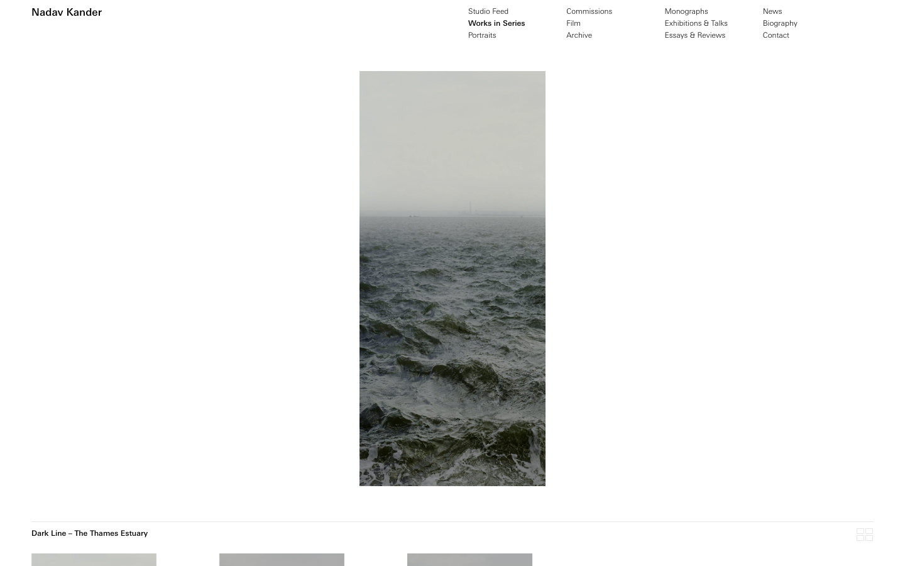
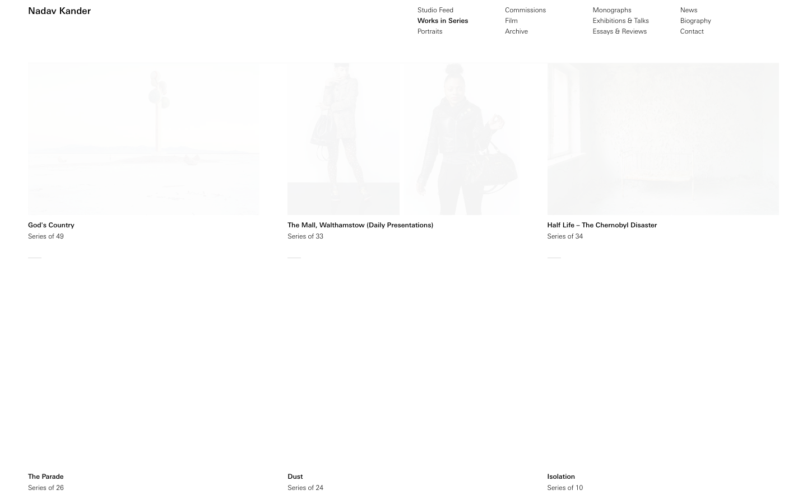
This is the best model for our solo view. There is one image, centred, on a white field, with a small title line under it and quiet prev/next controls. The series index uses text only, with titles and "Series of N" and no thumbnails.
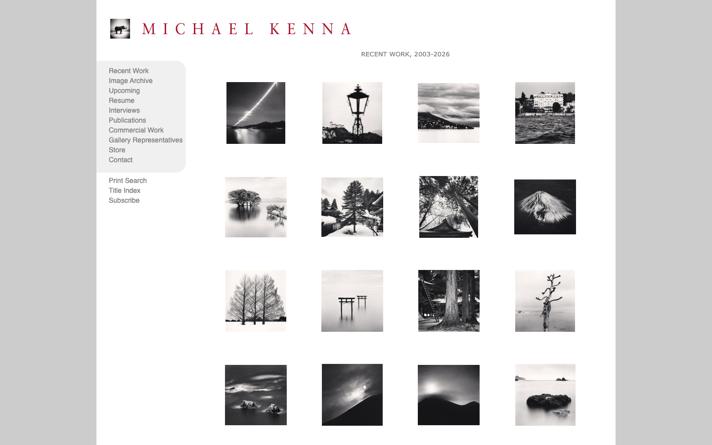
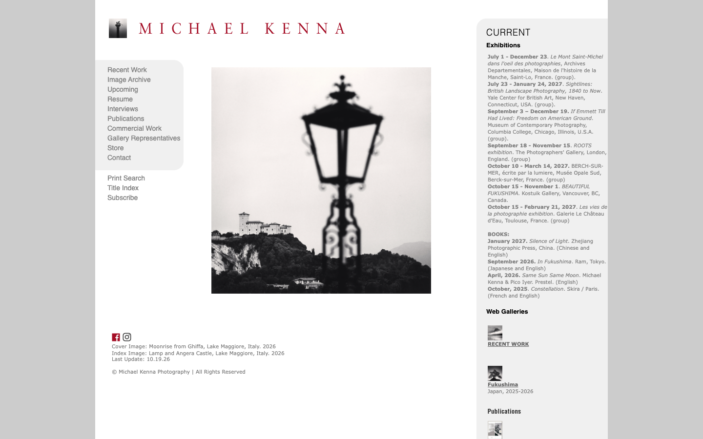
This has exactly our three levels. The gallery is an even grid of small thumbnails with generous white space, and each thumbnail opens its own image page. The chrome is dated, but the structure is right, and it is plain server-rendered PHP, so it works without JavaScript.
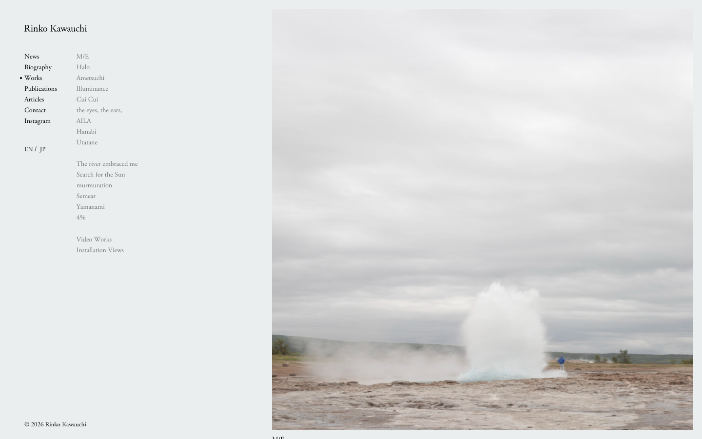
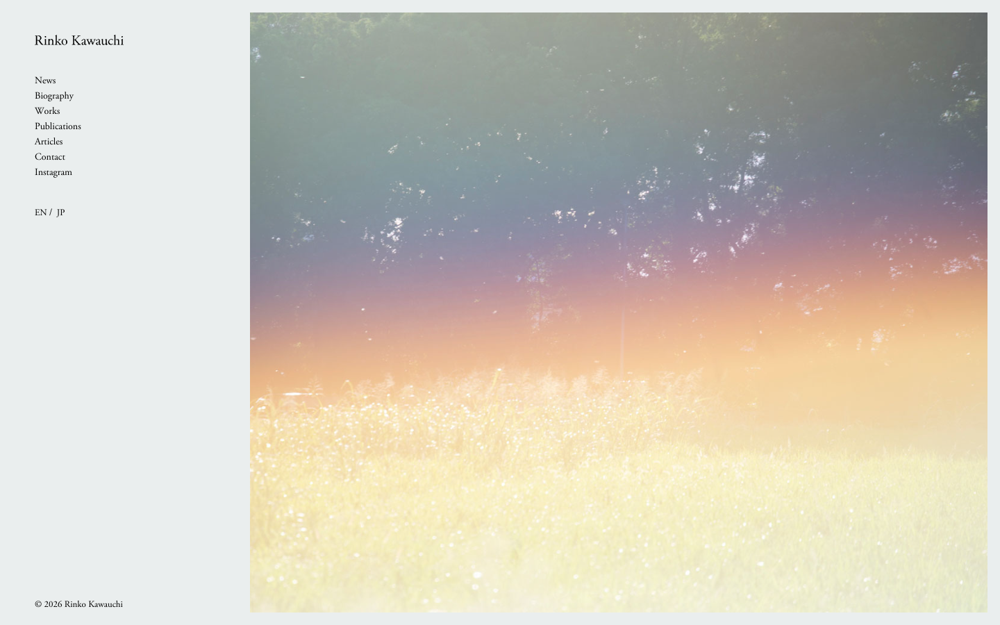
This is the calmest site in the set. A thin serif text column on the left lists the works, and one large image fills the rest of the page. Chrome is nearly absent, and the pale warm-grey background flatters the photographs.
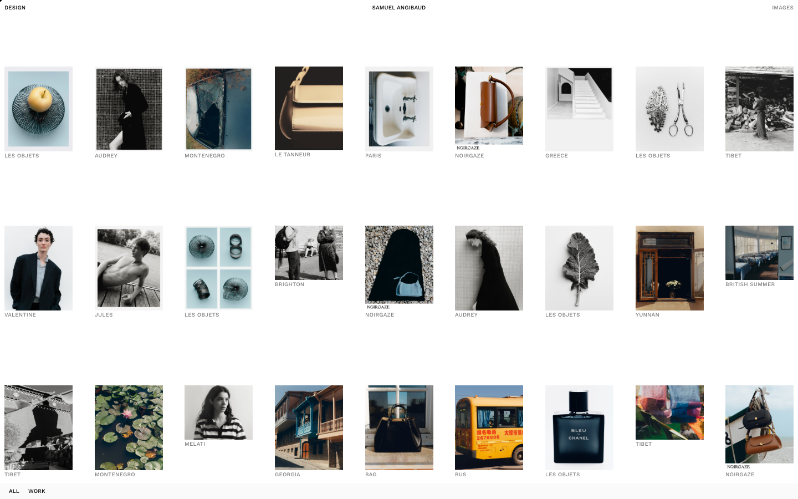
This is the cleanest gallery grid seen. The thumbnails are small, every image keeps its own aspect ratio inside equal cells, captions are tiny, and the rows have lots of air between them. It is a good model for our gallery page. The home page offers just two entry cards, "Design (7)" and "Images (36)".
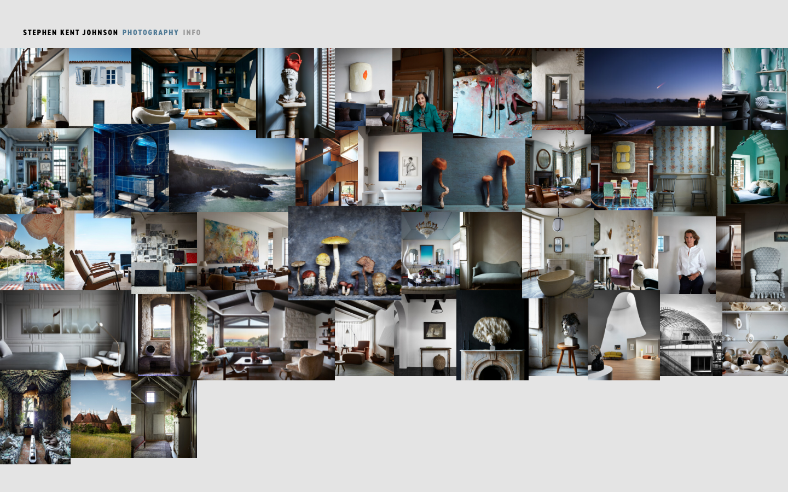
The home page is a single dense mosaic of every project's images. It shows the whole body of work at once. Here it is interiors; for us it could be every public gallery's cover.
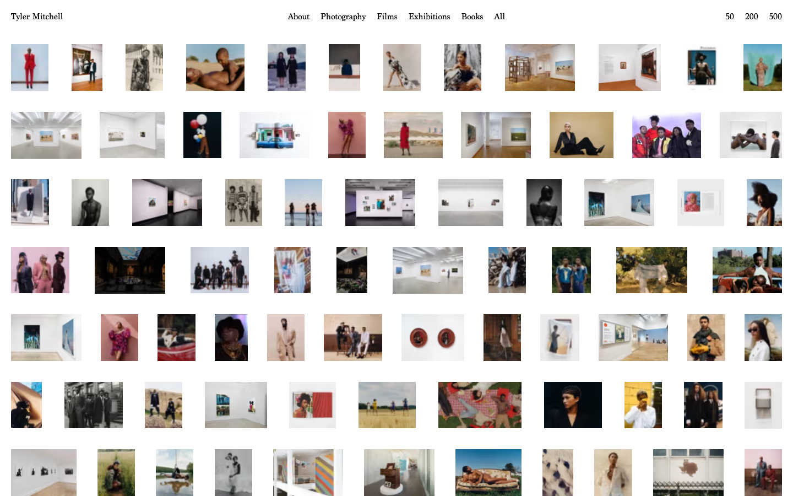
The home page is an archive of hundreds of very small thumbnails in a loose grid, with a one-line top nav. It reads like a contact sheet. The photography page then shows one large image at a time.
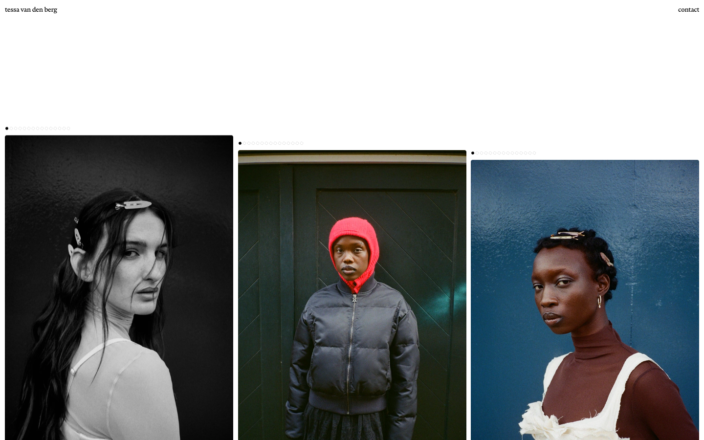
This is the most minimal site seen. It has a name at top left, "contact" at top right, and a horizontal run of equal-height images. It has no galleries at all, which is too thin for us, but the restraint is right.
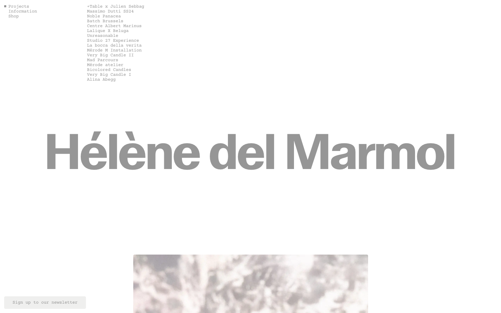
The name is set in large grey type as the hero, with a small text project list above it. Images appear only when you choose a project. This is a type-led alternative to a cover grid.
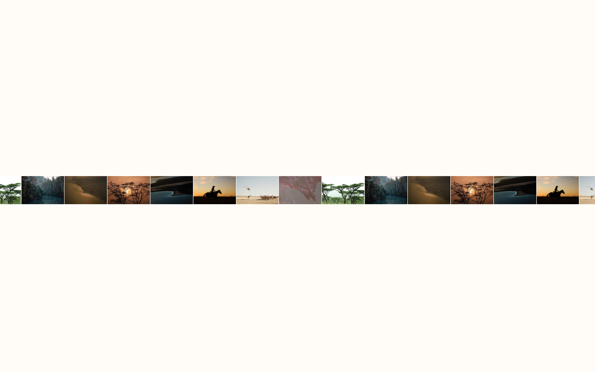
Each project is a single horizontal strip of small frames numbered 1.1–1.4. It is compact, it previews several images per gallery instead of one cover, and the off-white background is warm.
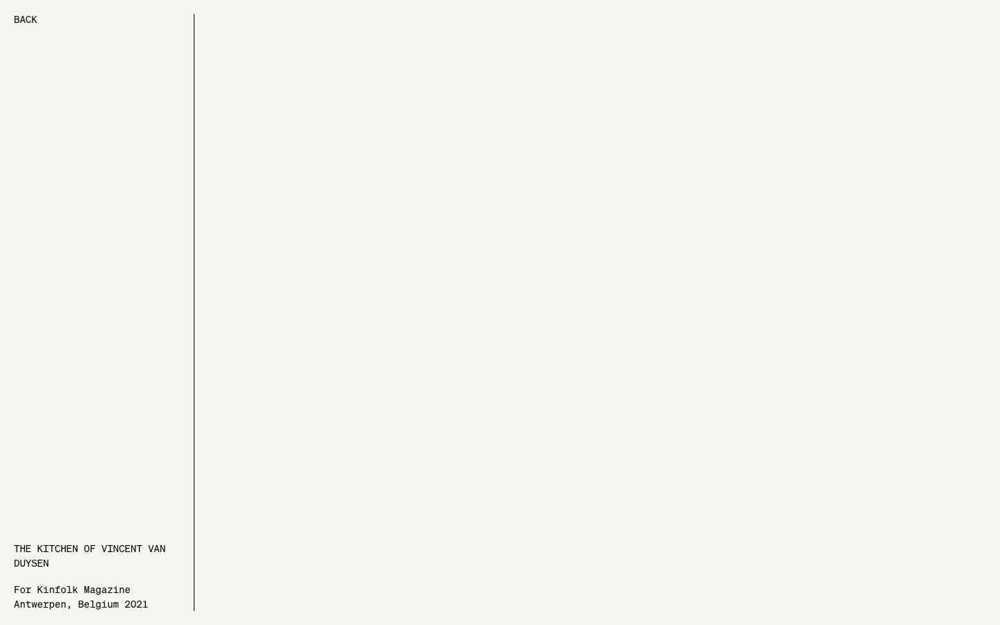
The images fade in through scroll scripts, so the screenshots came out mostly empty. The capture shows the cream background and monospace project text. Treat this one as unverified visually.
| Site | Why it doesn't fit |
|---|---|
| Danielle Levitt | Loud brand: giant red display type over images. Clean, but the opposite of a calm, image-first feel. |
| Ami Vitale | A text-heavy storytelling site whose galleries run in a third-party slideshow widget. |
| Alex Strohl | A commercial studio site with client logos and a shop. |
| Yuri Roga, Alexandra Tellez, Angela Ricciardi | Commercial or campaign portfolios mixing video and direction work. The structure is project-led, not gallery-led. |
| Pattern | Seen on | Fits our constitution? |
|---|---|---|
| White or near-white ground; images carry all the colour | almost all | Yes |
| Name as wordmark top-left, at most 3–5 nav words, small type | Kander, Kawauchi, Tessa, Mitchell, Angibaud | Yes. System fonts (IV.22) |
| Thumbnails kept small, with lots of whitespace; images never cropped to squares | Kenna, Angibaud, Mitchell | Yes. Stored aspect ratios (IV.8) |
| Solo view: one image centred, a small caption line below, prev/next as text | Kander, Kenna, Kawauchi | Yes. Works without JS as plain links |
| No hover effects, no animations, no carousels | Kander, Kenna, Kawauchi, Angibaud | Yes. Fade-ins made four sites unscreenshottable |
| Text-only index instead of covers | Kander, del Marmol, Kawauchi | Possible, but it conflicts with our cover-card home (IV.9) |
Kenna + Angibaud + Kander solo view
Kawauchi + del Marmol
Thies + Mitchell